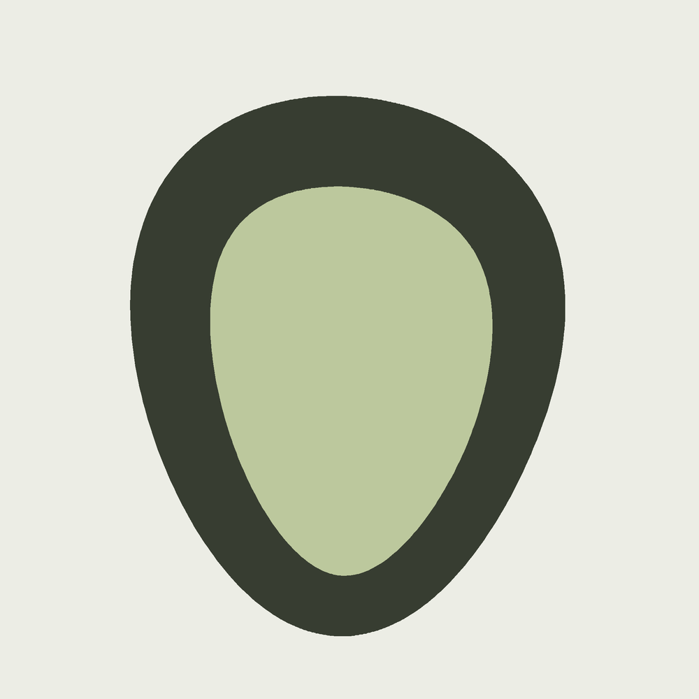
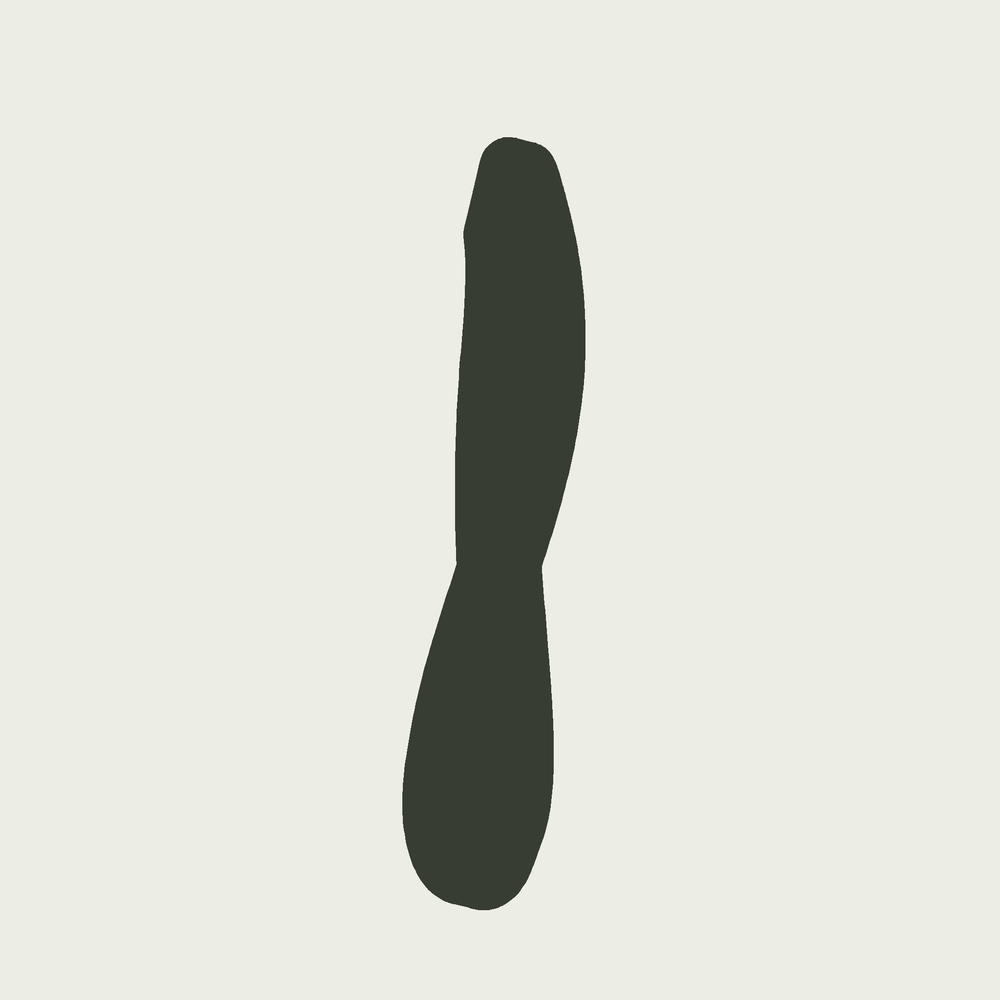
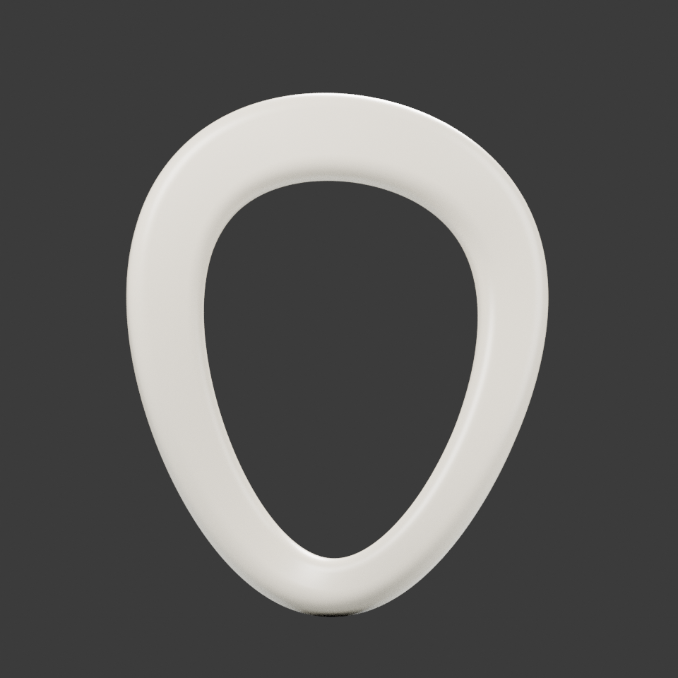
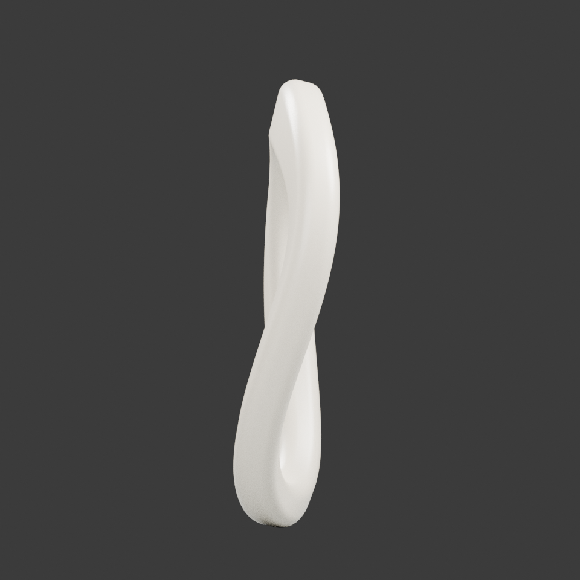
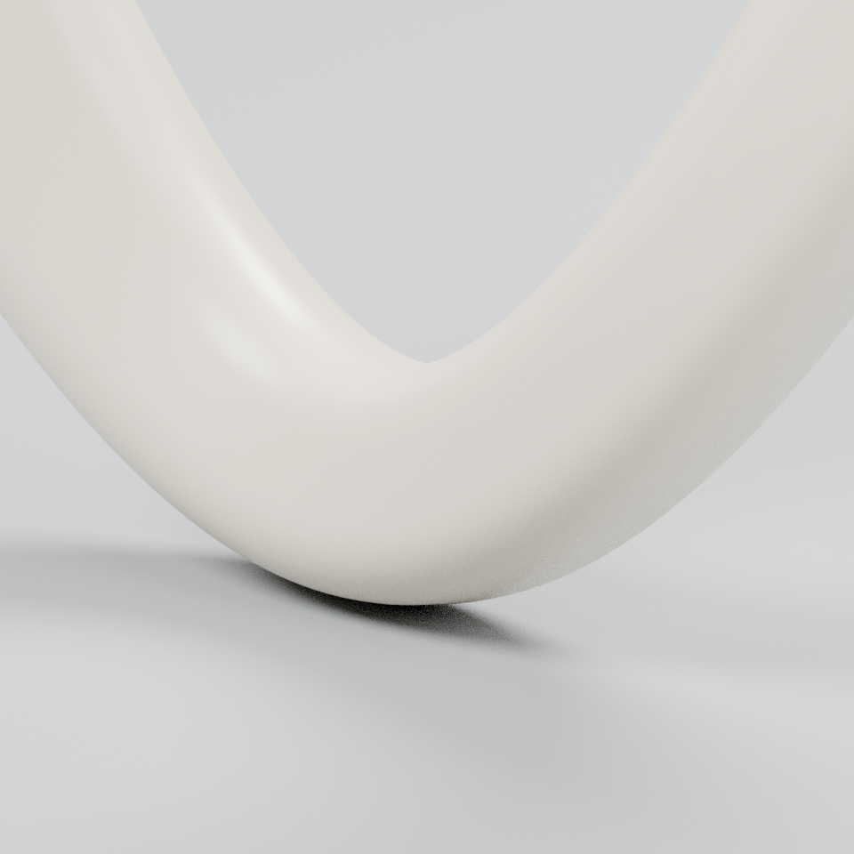
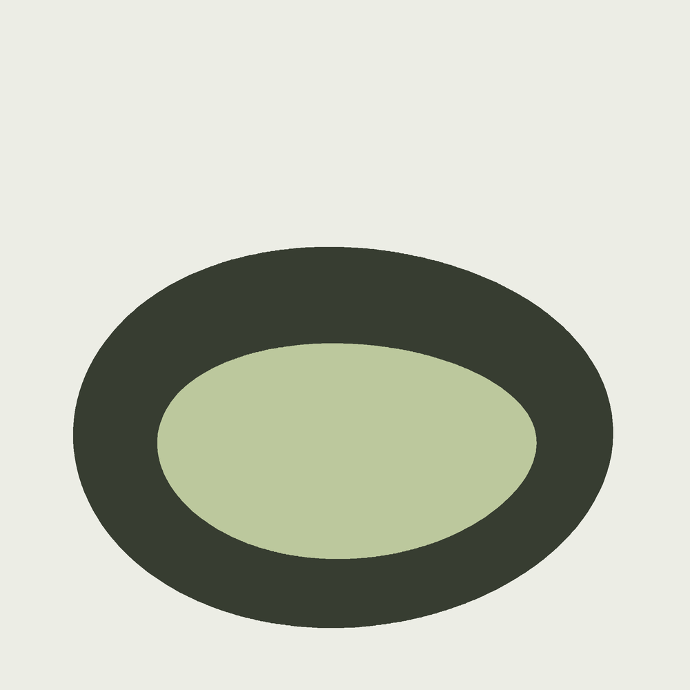
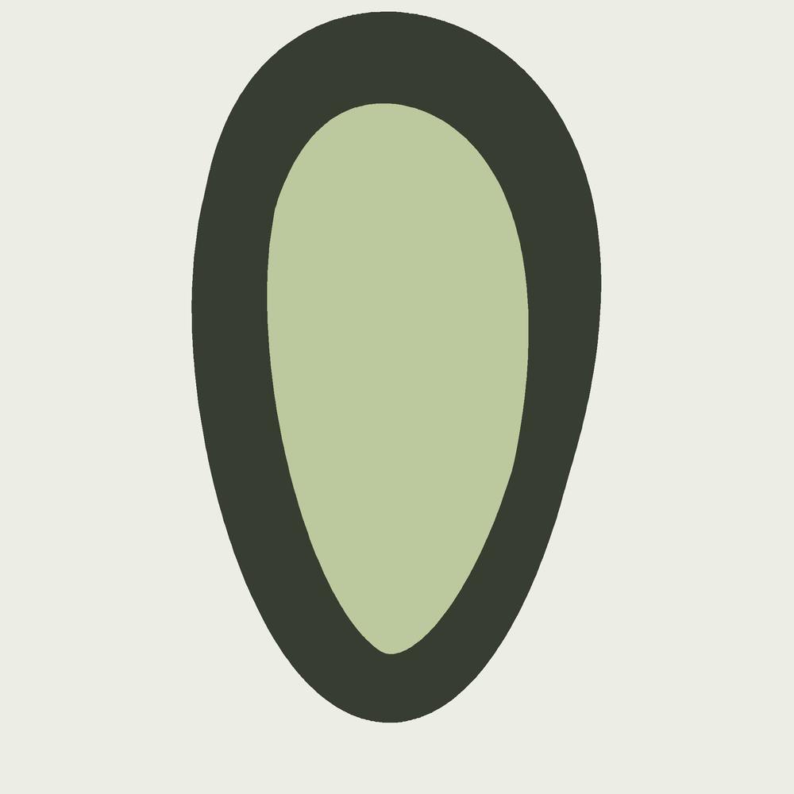

ORISON / 01
回环 Orison
一个偏心的直立开口。内缘向下收拢，外缘却并不跟着等距收拢。
- 宽 × 高
- 311.0 × 386.3 mm
- 正面内空投影
- 约 432 cm²
- 截面名义宽 × 深
- 52 × 38 mm
A study of form & absence
一条闭合的曲线，围出一个开口。先看见它留下的空处，再转到侧面：有些空白，并不会一直留在视野里。
常规 007 / 第四周期第一件
原创数字雕塑 · 暖白陶瓷外观研究，非实物烧制

主图暂不可用，正文与轮廓比较仍可阅读。
左图沿正面看，开口被完整围住；右图转过 90°，前后表面相互遮挡，投影中已没有封闭的内空。消失的是视线里的空白，不是三维模型的孔洞。


开口下部收窄，与较开阔的上部构成方向感。这里的轮廓不是另画的概念草图。
两图均由同一GLB的全部真实三角面投影并集得到，前后表面都参与遮挡。
约数来自 2048² 像素的二维连通空白；它不是三维体积、最小开口或可穿过物体的尺寸。
读取GLB节点的实际世界变换，将Y-up坐标转回Blender Z-up，并核对模型包围边界。正、侧两图固定500 mm画幅与205 mm垂直中心；不对每个对象单独放大。三角面覆盖像素后，从图框外部填充空白，剩余封闭空白着浅绿色。较低1024²采样与2048²结果的Orison正面面积差约 0.9 cm²；这只是离散收敛观察，不是精确连续面积证明。



沿曲线走一圈，截面也必须回到同一朝向。这个模型让首尾共享索引，用周期截面转角保持接续；并非把两个端面藏在一起。
扫掠的转弯有多急、截面有多粗，也需要一起约束。漂亮的表面不能替代接缝、局部绕序与自交检查。
三组模型与最终文件身份请见模型原始检查；下述图像读数是二维投影分析，不替代几何门禁。
读建模检查与边界 ↗三件使用同一材质语言，改变的是路径比例、截面与空间起伏。下面全部为正面正交投影，使用同一 500 mm 画幅；大小关系不由各自适配画框决定。
ORISON / 01
一个偏心的直立开口。内缘向下收拢，外缘却并不跟着等距收拢。
LATITUDE / 02

横向展开的空处。更宽、更低的路径与扁厚截面，让观看的重心向两侧延伸。
ASCEND / 03

向上拉长的空处。窄高路径、较厚截面与更明显的纵深起伏改变同一圈的视觉重心。
尺寸来自模型真实包围边界；截面宽深是名义输入，不等于每处恒定厚度。正面内空为同分辨率二维栅格估算，三者都不是体积或物理净空。
观察页呈现形体，制作档案保留证据。原创建模、图版、投影分析和网页迭代各有来源，不用一个“通过”覆盖全部层级。
原模型manifest · 模型说明 · 生成源与配置清单 · 接入身份核对